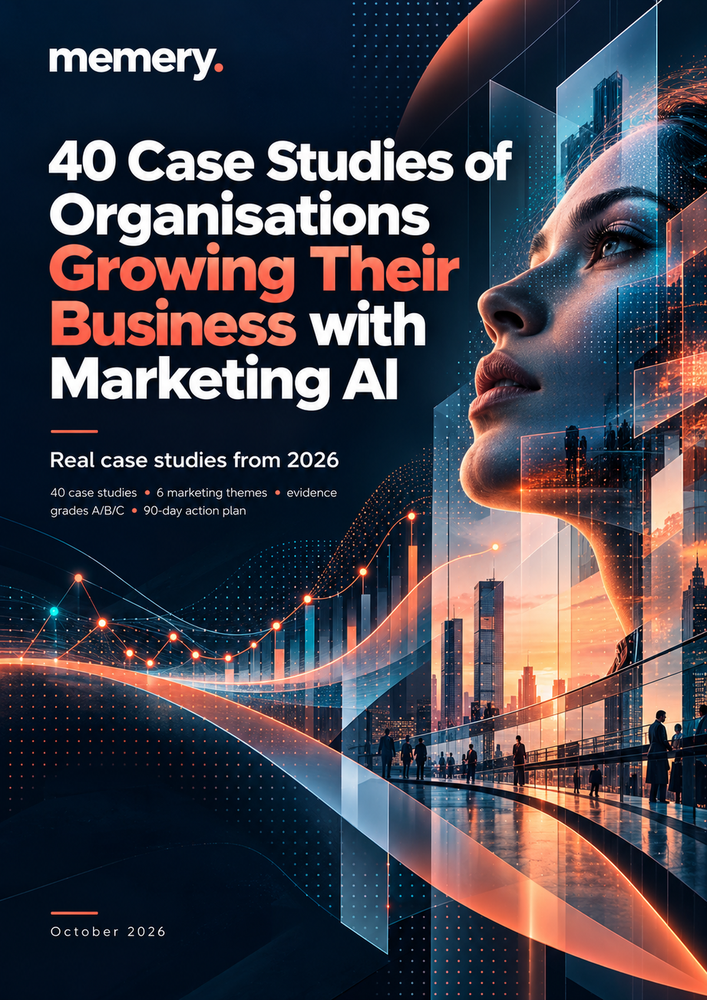
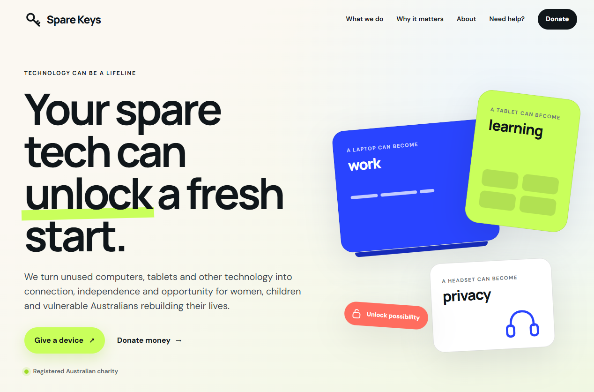

Build content engines
Generate, localise and adapt high-volume content inside approved brand assets, review gates and claims rules.
Most marketing teams are already using AI. Very few have redesigned how their marketing function actually works. memery helps teams turn scattered experimentation into a practical operating model: where AI can create value, what should stay human, how it should be governed, and what to implement next.
The problem usually isn’t access to AI. It is deciding where it genuinely belongs in marketing, which use cases are worth backing, what data and guardrails are required, and how the team should work differently.
We work with organisations to diagnose the opportunity, identify and prioritise use cases, design governance and workflows, build capability, and turn that into a practical implementation roadmap.
Not a generic trends deck and not a prompt library. We create a bespoke playbook around your customers, marketing model, technology, data, risk environment and commercial priorities.
Across the 40 case studies we reviewed, the strongest applications fall into seven practical areas — from production and personalisation to measurement, discovery and AI-assisted selling.
Generate, localise and adapt high-volume content inside approved brand assets, review gates and claims rules.
Use AI to choose audiences, bids, creative, offers and messages — then prove incremental lift rather than trusting the dashboard.
Move from fixed journeys and broad segments towards decisions about the best message, offer, timing or action for each customer.
Improve the likelihood that ChatGPT, Gemini, Claude, Perplexity and AI-powered search systems can understand, cite and recommend you.
Compress research synthesis, increase measurement cadence and connect customer evidence to faster marketing decisions.
Connect repeatable tasks to real systems, approved knowledge, explicit checkpoints and accountable human owners.
For smaller businesses, AI can provide the equivalent of extra marketing, CRM, research, content or development capability without enterprise infrastructure.
We reviewed 40 live examples from 2026 — a mix of major enterprises, growth companies, small businesses and solopreneurs — and graded the evidence behind every claim.
The consistent pattern is that AI creates value when it solves a measurable marketing or business problem, is grounded in good data and context, and is tested against reality.

Real case studies from 2026, evidence graded, with practical plays for large organisations and small businesses alike.
We combine senior marketing, customer experience, brand, digital, content, search and communications experience with hands-on AI implementation.
That means we understand the operating reality around the technology: competing priorities, stakeholder risk, brand governance, customer journeys, media investment, organisational capability and the need to prove commercial impact.
For Spare Keys, AI helped turn a lean communications operation into a more responsive marketing, fundraising and partnership engine.
We used AI to accelerate supporter communications, assist with grant and partnership research, surface new storytelling opportunities, improve donor and stakeholder follow-up, and make it easier to translate mission, impact and need into content that could actually be produced consistently.
The result was a stronger content rhythm, better use of scarce time, clearer fundraising and partnership outreach, and a more disciplined system for turning good ideas and incoming opportunities into action.

Usually that is exactly when a playbook becomes useful. Individual experimentation can create productivity gains, but it does not automatically create shared priorities, safe data practices, repeatable workflows, measurement or organisational capability.
No. The level of complexity changes with the organisation. Enterprise teams may need governance, data integration and decision engines; smaller organisations often get faster value from practical workflows that reclaim time, recover leads and add capabilities they could not otherwise staff.
Yes, when tool choice matters. But we start with the marketing problem, data, workflow, evidence and risk — not a preferred vendor.
Yes. Governance is part of the playbook: approved tools, sensitive-data boundaries, human approval, disclosure, record keeping, IP considerations and escalation.
We define the baseline first. Depending on the use case, that might mean cost and hours per asset, cycle time, incremental conversion, AI visibility, research turnaround, customer outcomes or another measure that can be tested against the current process.
The playbook includes a practical implementation roadmap with priority pilots, owners, controls, measures and scale-or-kill decisions. memery can also help implement selected workflows and capability changes.
Tell us what is getting in the way — scattered experimentation, unclear priorities, governance, slow workflows, weak AI visibility or simply not knowing where the real value is.
We’ll help turn it into a practical playbook your team can use.